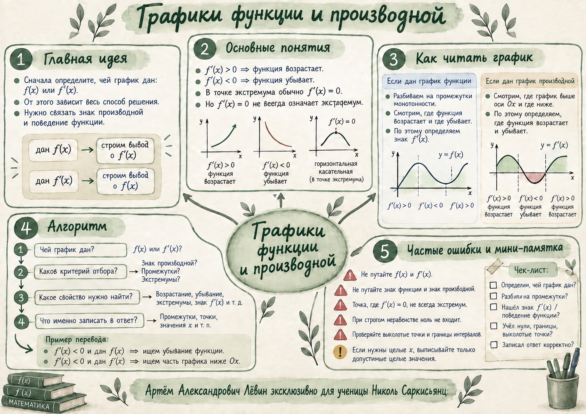

Положительная производная
Касательная поднимается слева направо.
Интерактивное пособие · персональный конспект
Главная цель занятия — быстро различать, чей график дан, и переводить информацию между знаком производной и поведением функции.
Ментальная карта собирает главный алгоритм, связи между f и f′ и типичные ошибки.

01 · главная связь
Касательная поднимается слева направо.
Касательная опускается слева направо.
Касательная горизонтальна. Само равенство нулю ещё не гарантирует экстремум.
Если функция дифференцируема в точке x₀, то f′(x₀) — угловой коэффициент касательной к графику в точке (x₀; f(x₀)). Чем больше |f′(x)|, тем больше по модулю наклон касательной.
02 · чей график дан?
Разбейте график на промежутки монотонности.
Определите, где функция возрастает и где убывает.
Переведите это в знак производной.
Отметьте точки, где достоверно известно f′(x)=0.
Постройте качественный эскиз f′(x).
По грубому эскизу функции надёжно определяется прежде всего знак производной. Точную форму f′ между характерными точками восстановить обычно нельзя.
Разбейте график на промежутки знакопостоянства.
Выше оси Ox: f′(x)>0.
Ниже оси Ox: f′(x)<0.
Переведите знак производной в возрастание или убывание функции.
Для экстремума проверьте смену знака.
− → + даёт локальный минимум; + → − даёт локальный максимум. Если знак не меняется, экстремума нет.
Нули производной: x=−1 и x=1. Поэтому функция возрастает на (−∞;−1) и (1;+∞), убывает на (−1;1).
03 · пошаговый режим
Шаг 1
Сначала определите: это график f(x) или график f′(x). От этого зависит вся дальнейшая логика.
Шаг 2
Выделите математическое условие: например, f′(x)<0, f′(x)>0, f′(x)=0, точка максимума или минимума.
Шаг 3
Если дан f(x) и требуется f′(x)<0, ищите убывание. Если дан f′(x), ищите часть графика ниже оси Ox.
Шаг 4
Проверьте формат: точки, значения x, количество целых x, промежуток или количество точек. Границы, нули производной и выколотые точки проверяйте отдельно.
04 · задачи ЕГЭ
При условии f′(x)<0 точки, где f′(x)=0, в ответ не входят. То же относится к условию f′(x)>0.
Если точка выколота, соответствующее значение x не принадлежит области определения изображённой функции и не учитывается.
Если крайняя точка принадлежит графику, проверяйте её по условию отдельно. Выколотую точку использовать нельзя.
Сначала получите допустимые интервалы, затем перечислите только целые точки внутри них.
На схеме сравниваются два чтения одного условия: когда дан график функции и когда дан график производной.

05 · контроль ошибок
06 · Путь А
В параметрах пособия указано N=0, поэтому дополнительных тренировочных упражнений в этом выпуске нет. Для закрепления используйте пошаговый алгоритм и цифровую лабораторию на функции f(x)=x³−3x.
07 · самопроверка
Отмечено: 0 из 8